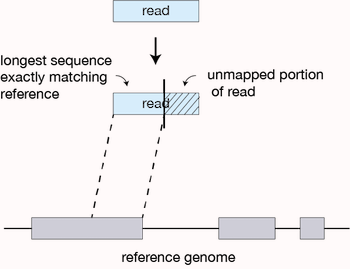
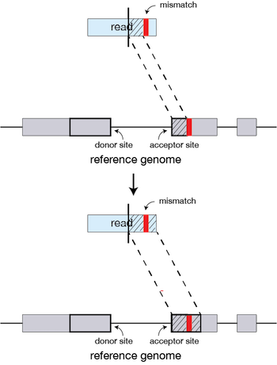
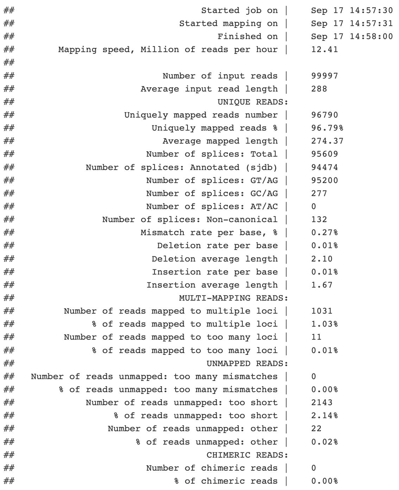
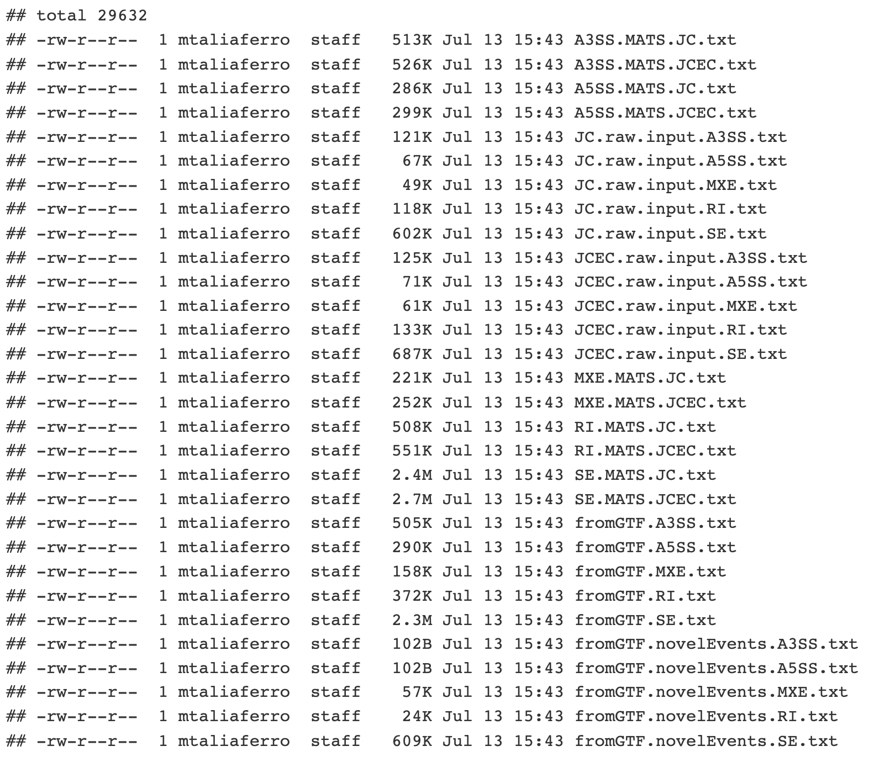
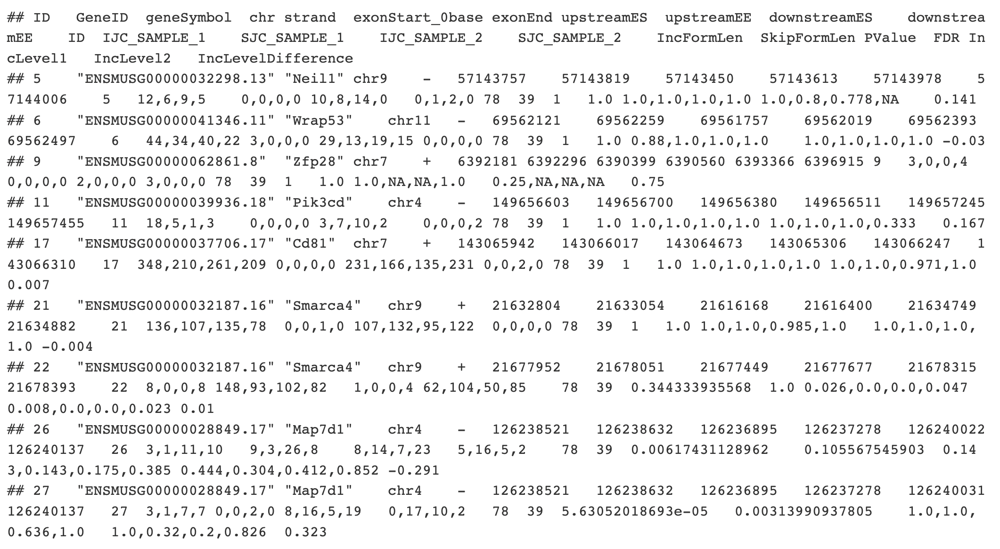

In this lecture, we are going focus on analyzing the regulation of alternative splicing using RNAseq approaches.As we learned last week, salmon quantifies a fastq file of sequencing reads against a fasta file of all transcripts present in the sample. At the end of this analysis, we end up with quantifications for each transcript in our fasta file. However, for splicing you may be able to see how this strategy may need to be tweaked. salmon gave us transcript-level data, but for looking at splicing, we often want to measure how the inclusion of individual exons within transcripts differs between conditions. Thus, transcript-level quantifications are not directly useful here.
Small aside: Actually, transcript level quantifications could work, because you could ask how the relative abundances of two different transcripts (one that has the exon in question and one that doesn’t) vary across conditions. See also suppa2.
Split alignments
We need exon-level quantifications. So we want to count reads that either support the inclusion or exclusion of an exon.
Below are examples of some RNAseq reads mapped along a transcript. This transcript contains exons (yellow) and introns (gray). Let’s say that there are two isoforms of this gene: one where exon2 is included and one where it is exlcuded. Reads have been “aligned” to this transcript to give a graphical representation of where they came from. You can see that the orange, purple, blue, and teal reads all support the inclusion of exon2.
Kim et al, Nat Methods, 2015
Split alignments
Another way to think about this is that the orange, purple, blue, and teal reads came from RNA molecules in which the transcript was included.
We know this because each of those reads cross a splice junction that is either exon1-exon2 or exon2-exon3. These reads tell us, unambiguously, that exon2 was included in the RNA molecule that these reads came from.
Kim et al, Nat Methods, 2015
What does the red read tell us? What would a read that unambiguously told us that exon2 was excluded look like?
Strategy in action
Example of reads mapped to the area surrounding an alternative exon (the middle exon). The height of the red and blue area corresponds to the number of read coverage. The red and blue lines connecting exons represent the number of reads that span that junction. So for the blue condition, there are 347 reads (91 + 256) that support the inclusion of this exon, while 81 reads support its exclusion. In the red condition, this exon is less often excluded as 296 reads (65 + 231) support its inclusion while 130 support its exclusion. Think about how often an exon was included in a sample as a ratio between the inclusion- and exclusion-supporting reads.
Workflow
We will focus on the right side of the flowchart that relies on STAR, a splice-aware read aligner, and rMATS, an alternative splicing analysis tool.
How STAR works
STAR begins by finding matches (either unique or nonunique) between a portion of a read and the reference. This matching region of the query is extended along the reference until the two start to disagree. If this match extends all the way through to the end of the read, then the read lies completely within one exon (or intron, or I guess intergenic region if you are bad at making RNAseq libraries) and we are done. If the match ends before the end of the read, the part that has matched so far defines one seed.

How STAR works
STAR then takes the rest of the query and uses it to find the best match to its sequence in the reference, defining another seed.
How STAR works
If, during the extension of a match a small region of mismatch or discontinuity occurs, these can be identified as mutations or indels if high-quality matches between the query and reference resume later in the read.

How STAR works
After aligning seeds, they can be stitched together. The stitching of seeds with high alignment quality (low number of indels, mismatches) is prefered over the stitching of seeds with low alignment quality (high number of indels, mismatches).
Running STAR
To align reads, we first need to create an index of the genome (see STAR manual here. To do this, STAR will require the sequence of the genome (in fasta format), and an annotation that tells it where exons and introns are. It needs the annotation to be able to see if seeds that it stitches together make sense with what we know about exon/intron structures that exist in the transcriptome. Let’s take a look at one of these genome annotation files.
Annotation files
The most common annotation files are GTF and GFF files. Here’s an example of a GFF.
Each line corresponds to one feature. This is a tab-delimited text file. There are only a few columns that we care about:
Column 1: chromosome
Column 2: source
Column 3: feature type
Column 4: feature start
Column 5: feature end
Column 7: strand (you aren’t in DNA land anymore…strand matters)
Annotation files
Column 8 contains various information about the feature. Perhaps the most important one tells you about the hierarchy that defines the relationship between features. For example, genes contain children transcripts within them, and each transcript contains children exons. Transcripts will therefore belong to parent genes and exons will belong to parent transcripts. Biologically, this should make sense to you. These relationships are indicated by the Parent attribute within column 8.
Make STAR index
OK now we are ready to make our index. There relevant options we will need to pay attention to when doing this are shown below:
–runMode genomeGenerate (we are making an index, not aligning reads)
–genomeDir /path/to/genomeDir (where you want STAR to put this index we are making)
–genomeFastaFiles /path/to/genomesequence (genome sequence as fasta, either one file or multiple)
–sjdbGTFfile /path/to/annotations.gff (yes it says gtf, but we are going to use a gff format)
–sjdbOverhang 100 (100 will usually be a good value here, the recommended value is readLength - 1)
–sjdbGTFtagExonParentTranscript Parent (we have to specify this because we are using a gff annotation and this is how gff files denote relationships)
–genomeSAindexNbases 11 (don’t worry about this one, we are specifying it because we are using an artificially small genome in this example)
Well so how did it go? Check the log file. We can see that we put in almost 100k read pairs and 96.7k of these could be uniquely assigned to a single genomic position. 95.6k of these had a splice junction. This is expected for paired end reads against a genome with many introns and short exons.
As an aside, any read that aligns more times than is allowed by the flag –outFilterMultimapNmax is not reported in the alignments. As a default, this value is set to 10. Libraries that are made from low complexity RNA samples and those that deal with repetitive genomic regions can be sensitive to this. Also, if you wanted to, you can use this flag to restrict your alignment file to those that only uniquely aligned by setting this value to 1.

Investigating alignment files
Our alignment output file is dummyAligned.sortedByCoord.out.bam. BAM files are binary files and need to be converted to plain text using samtools view for us to read it.
SAM files can be a little confusing, but it’s worth taking the time to get to know them. The full SAM format specification can be found here.
Let’s take a look at our SAM file and see what we see. I’m going to pick 2 lines out.
Here we are looking at 2 lines from this file. These two lines correspond to two paired reads. I know that because the first field in this file is the read ID as it came off the sequencer. You can see that these two reads have the same ID (it’s the thing I grepped for).
Alignments
The second field is a bitwise flag. It is a sum of integers where each integer tells us something about the read. Every possible value of this flag is a unique combination of the informative integers. You can see what each of these integers are and what they mean in the SAM format specification. There is also a handy calculator that you can plug your value into and it will tell you what your flag means here. If we put our first flag, 163, in there it tell us that this read is:
The second read in a mate pair (128)
On the opposite strand of its mate pair (32)
Is mapped and properly paired (2)
Is paired (1)
If you put the flag value for the second read into the calculator, what do you get?
Alignments
The third field is obviously the reference name. No big mystery there. This read maps to chromosome 19.
The fourth field is the position on the reference that corresponds to the beginning of the query. This read starts to map to chr19 beginning at position 3371611. As a aside, positions reported in SAM files are 1-based, not 0-based.
Alignments
The sixth field is called the CIGAR string. This is a string of characters that tells you a little bit about how the query aligns to the reference. Again, details can be found in the SAM format specification. The CIGAR string for the first read can be interpreted as follows:
The first 67 bases in the query align to the reference.
There is then a gap in the reference of 3415 nt.
Then the query starts to match again, and does so for the next 84 nt.
These are paired end 151 nt reads, so it makes sense that 67 + 84 = 151.
In not so shocking news, the top read’s mate (the second read) also has a gap in the reference of 3415 nt. As you might have guessed, these reads are spanning the same intron, which you would expect reads from the same mate pair to do.
Alignments
The ninth field is the template length, abbreviated TLEN. This is the distance, in nt, from the beginning of one read in a pair to the end of it’s mate.
If you know a little bit about how RNAseq libraries are made, you might know that transcripts are fragmented, usually to lengths of 200-500 nt. Given that this read is stretching over 3 kb along the reference sequence, it’s a good bet that it is spanning an intron that is present in the reference but had been removed in the RNA molecule i.e. it was spliced out!
Workflow
Now that we have aligned with STAR, we can calculate exon inclusion with rMATS. As is often the case with bioinformatic tools, rMATS is not the only tool that you can use to look at alternative splicing, but it has been around for a while and has been thoroughly tested.
PSI (\(\psi\)) values
In many scenarios, splicing is quantified using a metric called PSI (Percent Spliced In), often shown as the greek letter \(\psi\), is a metric that asks what fraction of transcripts contain the exon or RNA sequence in question. Thus, \(\psi\) values range from 0 (which would indicate that the exon is never included) to 1 (which would indicate that the exon is always included). \(\psi\) can be estimated by counting the number of reads that unambiguously support the inclusion of the exon and the number of reads that unambiguously support exclusion of the exon.
For skipped “cassette” exons, these reads are diagrammed below:
Shen et al, (2014). PNAS
PSI (\(\psi\)) values
In this diagram, the exon in gray can either be included or skipped to produced two different transcript isoforms. Reads in red (I for inclusion) unambiguously argue for the inclusion of the exon while reads in green (S for skipping) unambiguously argue for skipping of the exon. Keep in mind that the reads drawn over splice junctions indicate the the read spans the splice junction.
Shen et al, (2014). PNAS
Note: Red reads that do not cross a junction but lie totally within the gray exon are often used in splicing analysis, but do not formally unambiguously show exon inclusion. It is safer to rely only on splice-junction spanning reads for splicing quantitation. The downside of this is that you will lose read counts that came from non-junction reads. Fewer read counts means less statistical power.
Types of alternative splicing
Shen et al, (2014). PNAS
There are other types of alternative splicing besides skipped exons. In each case, \(\psi\) is defined as the fraction of transcript in which the white sequence is included.
Since we have already determined where in the genome RNAseq reads came from using STAR, we will now use rMATS to take those locations and combine it with information about the locations of alternative exons to quantify the inclusion of each alternative exon.
Running rMATS
To quantify alternative splicing, rMATS needs two things: the locations of the reads in the genome (bam files) and the locations of alternative exons in the genome (GTF annotation file).
Note: You may remember that when we ran STAR, we used a different type of genome annotaiton file: GFF. GTFs and GFFs contain essentially the same information and it is possible to interconvert between the two. I chose to introduce you to GFFs because, to my mind, they are more intuitive to and readable by humans. STAR could handle both GTF and GFF formats. rMATS requires GTFs.
Here are the most relevant options when running rMATS. See the documentation here.
–b1 /path/to/b1.txt (path to a text file that contains paths to all BAM files for samples in condition 1)
–b2 /path/to/b2.txt (path to a text file that contains paths to all BAM files for samples in condition 2)
–gtf /path/to/gtf (path to the gtf genome annotation)
-t readtype (single or paired)
–readlength readlength
–od /path/to/output (output directory)
Looking at rMATS output
In this example, the authors were interested in the splicing regulatory activity of the RNA-binding protein RBFOX2. They sequenced RNA from cells that had been treated with either shRNA against RBFOX2 or a control, non-targeting shRNA. Each condition was performed in quadruplicate, meaning we have 4 replicates for each condition. I downloaded their data, aligned it against the mouse genome using STAR, and then quantified alternative splicing using rMATS.
We won’t run rMATS here because we would need multiple large bam files to do anything meaningful, and honestly, it’s just copying things from the documentation and putting them into the command line. What we will do though, is look at the output produced by rMATS.
rMATS output
You can see that there are many files here, and that each type of alternative splicing (A3SS, A5SS, MXE, RI, and SE) has files associated with it. Specifically each event type has 2 files: one that ends in ‘JC.txt’ and one that ends in ‘JCEC.txt’. The ‘JC.txt’ files only use reads that cross splice junctions to quantify splicing (JC = junction counts) while the ‘JCEC.txt’ files use both junction reads and reads that map to the alternative exon (EC = exon counts). We are going to use the files ending in *JC.txt.

rMATS output
If we look at SE.MATS.JC.txt file the column names are at the top. Let’s go through some of the more important columns:
ID A unique identifier for this event.
chr chromosome
strand strand (+ or -)
exonStart_0base the coordinate of the beginning of the alternative exon (using 0-based coordinates)
exonEnd the coordinate of the end of the alternative exon

rMATS output
upstreamES the coordinate of the beginning of the exon immediately upstream of the alternative exon
upstreamEE the coordinate of the end of the exon immediately upstream of the alternative exon
downstreamES the coordinate of the beginning of the exon immediately downstream of the alternative exon
downstreamEE the coordinate of the end of the exon immediately downstream of the alternative exon
rMATS output
Notice that with these coordinates and the sequence of the genome, you could derive the sequences flanking each of these exons. That could be useful, perhaps, if you wanted to ask if there were short sequences (kmers) enriched near exons whose inclusion was sensitive to RBFOX2 loss versus exons whose inclusion was insensitive.
IJC_SAMPLE_X the number of read counts that support inclusion of the exon is sample X (four numbers, one for each replicate, each separated by a comma)
SJC_SAMPLE_X same thing, but for read counts that support the exclusion of the exon
rMATS output
The numbers from [S|I]JC_SAMPLE_X could be useful for filtering events based on coverage. Say, for example, that we were looking at an event that when we combined IJC and SJC counts for each replicate we got something like 2,4,1,5. That would mean that in the replicates for this condition, we only had 2, 4, 1, and 5 reads that tell us anything about the status of this exon. That’s pretty low, so I would argue that we really wouldn’t want to consider this event at all since we don’t have much confidence that we know anything about its inclusion.
PValue The pvalue asking if the PSI values for this event between the two conditions is statistically significantly different
FDR The p value, after it has been corrected for multiple hypothesis testing. This is the significance value you would want to filter on.
IncLevel1 PSI values for the replicates in condition 1 (in this case, condition 1 is RBFOX shRNA).
IncLevel2 PSI values for the replicates in condition 2 (in this case, condition 2 is Control shRNA).
IncLevelDifference Difference in PSI values between conditions (Condition 1 - Condition 2).
rMATS output
psis <-read_tsv(here("data/block-rna/rMATS/SE.MATS.JC.txt.gz"), ) |># Select only the columns we care about dplyr::select(c(ID = ID...1, geneSymbol,contains("SAMPLE"), FDR,starts_with("Inc") ) )psis
We will only consider events where there are at least 20 informative reads that tell us about the inclusion of the exon IJC + SJC > 20 in every replicate. For example, for event ‘5’ (gene Neil1) above, Sample 1 replicates have 12, 6, 9, and 5 reads while Sample 2 replicates have 10, 8, 14, and 0 reads. I would want to require that all of 12, 6, 9, 5, 10, 8, 14, and 0 are greater than 20 in order to worry about this event. Otherwise, I conclude that we don’t have enough data to accurately conclude anything about this event.
Exons whose inclusion is not regulated tend to have PSI values that are either very close to 0 or very close to 1 (i.e. these exons are pretty much always included or always skipped). Exons whose inclusion is regulated tend to have PSI values that are more evenly spread between 0 and 1. Do see this in our data?
psis_filt_psi <- psis_filt |>separate_wider_delim(col = IncLevel1,delim =",",names =c("PSI_S1R1", "PSI_S1R2", "PSI_S1R3", "PSI_S1R4") ) |>separate_wider_delim(col = IncLevel2,delim =",",names =c("PSI_S2R1", "PSI_S2R2", "PSI_S2R3", "PSI_S2R4") ) |>select(contains("PSI"), FDR) |>mutate(across(starts_with("PSI"), as.numeric))# Turn data from wide format into long format for plotting purposespsis_filt_psi_long <- psis_filt_psi |>pivot_longer(cols = PSI_S1R1:PSI_S2R4,names_to ="sample",values_to ="psi" ) |>mutate(condition =if_else(str_detect(sample, "S1"), "RBFOX2kd", "Controlkd"),sig =if_else(FDR <0.05, "yes", "no") )
Just as we did with gene expression values, we can monitor the quality of this data using principle components analysis. We would expect that replicates within a condition would be clustered next to each other in this analysis and that PC1, the principal component along which the majority of the variance lies, would separate the conditions.
# Make a matrix of psi valuespsis_mtx <-select(psis_filt_psi, -FDR) |>drop_na()# Use prcomp() to derive principle component coordinants of PSI valuespsi_pca <-prcomp(t(psis_mtx))# Add annotations of the conditions to the samplespsi_pca_pc <-data.frame( psi_pca$x,sample =colnames(psis_mtx) ) |>mutate(condition =case_when(grepl("S1", sample) ~"RBFOX2kd",.default ="Controlkd" ) ) # Get the amount of variances contained within PC1 and PC2psi.pca.summary <-summary(psi_pca)$importancepc1var <-round(psi.pca.summary[2, 1] *100, 1)pc2var <-round(psi.pca.summary[2, 2] *100, 1)# Plot PCA dataggplot( psi_pca_pc,aes(x = PC1,y = PC2,shape = condition,color = condition )) +geom_point(size =5) +scale_color_manual(values = colors) +labs(x =paste("PC1,", pc1var, "% explained var."),y =paste("PC2,", pc2var, "% explained var.") ) +theme_cowplot()